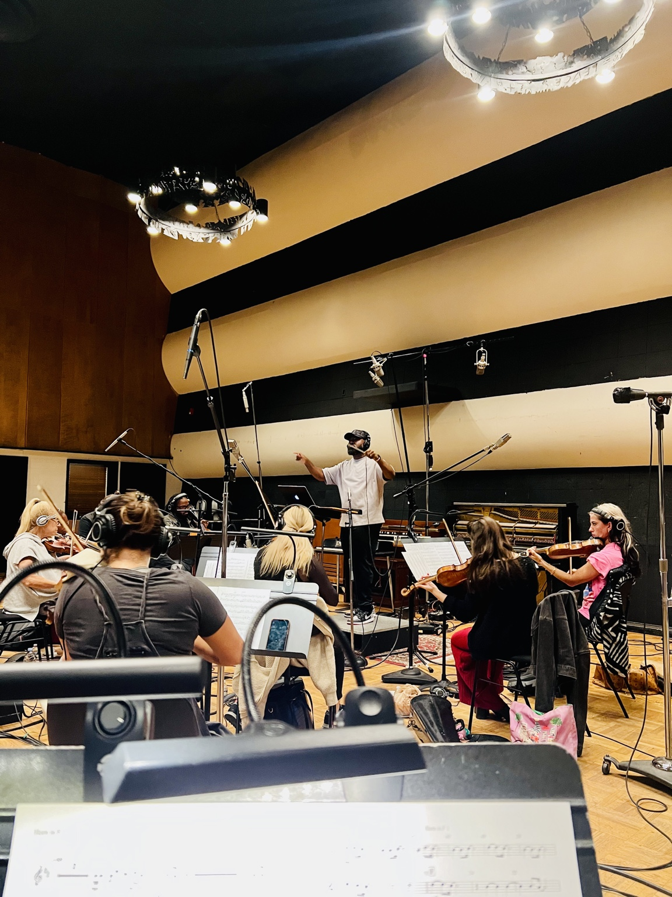
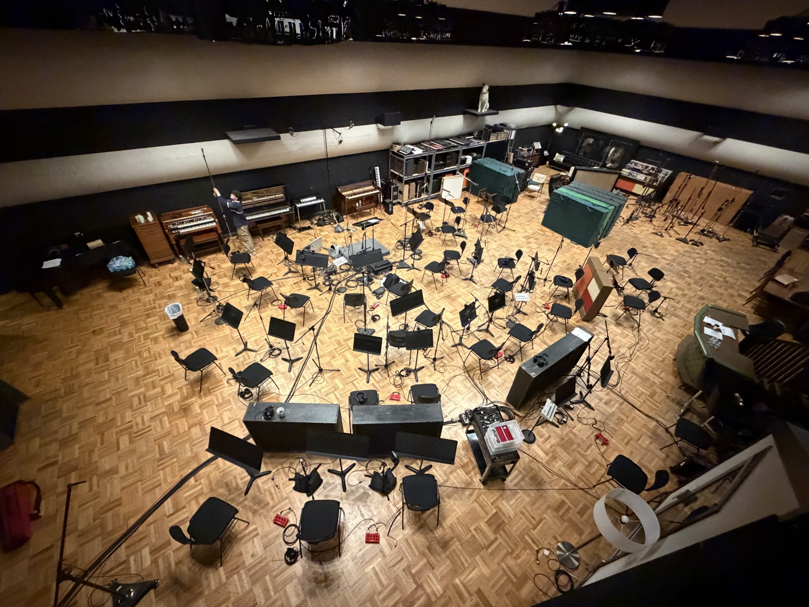
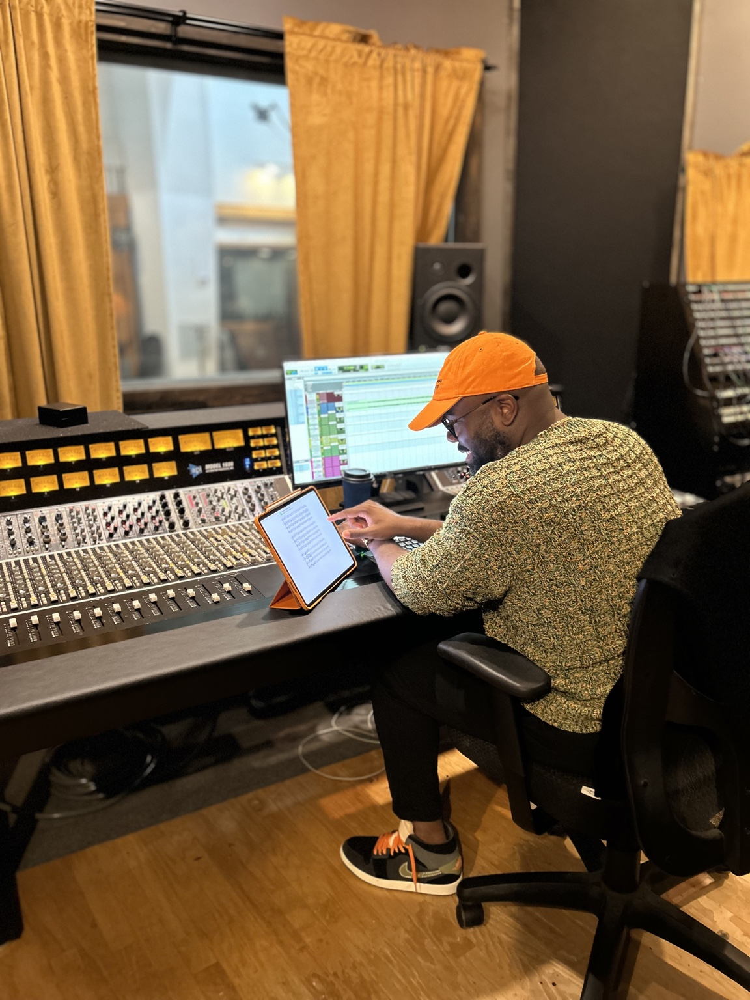

Recording & String Sessions
Professional studio recording, live orchestral tracking, and string sessions for songs, albums, soundtracks, and video productions.
Recording · Session Strings · Full Orchestration · Scoring · Production

World Class Sound

Story in Every Note

Creative Collaboration

From Studio to Stage
Rooted in the Latin word meaning “all things,” Omnia represents the art of bringing every element of music together.
Our name says strings. Our expertise goes far beyond them. From session strings and recording to full orchestration, score preparation, horn and vocal arrangements, engineering, musician contracting and music production, we bring the right artistry and technical team together.
From solo musicians and intimate ensembles to full orchestras, we coordinate the talent and resources needed to realize each musical vision.
We approach every project with musical sensitivity, preparation, collaboration, and a commitment to excellence. Our founders have earned four GRAMMY Awards collectively.
Professional musical services tailored to artists, producers, churches, studios, venues, creative teams, and orchestral organizations.
Professional studio recording, live orchestral tracking, and string sessions for songs, albums, soundtracks, and video productions.
Recording and audio engineering support, session preparation, microphone placement, multitrack capture, and coordination with producers and musicians.
Talent sourcing, personnel contracting, ensemble coordination, and session management for tours, weddings, churches, studio recordings, concerts, and special events—from soloists and small ensembles to full orchestras.
Original compositions, custom orchestrations and arrangements for recordings, special commissions, studio sessions and live performances. From the first concept to complete scores and parts.
Creative development and delivery of custom compositions and orchestral arrangements for ensembles, presenters, artists, and special projects.
Production, creative direction, recording collaboration, mixing, mastering, and musical development from early concept to final delivery.
Musicians, ensembles, contracting, conducting, and musical direction for churches, worship services, concert halls, theaters, tours, and special events.
String musicians and orchestral ensembles for filmed performances, live tracking videos, music videos, and other visual productions.
Guidance on instrumentation, ensemble size, orchestral production, personnel planning, session logistics, and creative strategy.
Orchestration and full orchestra arrangements for albums, live concerts, commissioned works and recording sessions. Original instrumental writing tailored to the ensemble and creative brief.
Orchestral scoring, full scores, instrumental parts, music notation, score editing and performance-ready materials for conductors, session players and productions.
Custom string arranging, horn arrangements, vocal arrangements and rhythm-section writing for artists, orchestras, live performances and studio projects.
Accurate transcriptions of strings, horns, piano, vocals and other instrumental parts, prepared as readable scores and individual parts.
From an intimate string quartet to a larger ensemble, organize live string sessions, studio tracking, remote production coordination and recorded or filmed performances.
Selected professional credits and collaborations from Omnia Session Strings and the individual careers of its founders, Hamilton Hardin and Nicole Hardin.
Credits and commissions represent selected work across the company and its founders’ individual careers. They do not necessarily indicate that every project was commissioned, produced, or contracted directly through Omnia Session Strings, LLC.
A growing collection of studio photographs, behind-the-scenes sessions, orchestral tracking and production footage. Swipe horizontally to explore the recordings, and play any video to watch.

Professional musicians working together during a studio recording session.

An overhead view of studio seating, music stands, and recording setup.

Music production and engineering in the control room.
Behind the scenes of studio recording and musical collaboration.
Behind the scenes of studio recording and musical collaboration.
Behind the scenes of studio recording and musical collaboration.
Behind the scenes of studio recording and musical collaboration.
Behind the scenes of studio recording and musical collaboration.
Behind the scenes of studio recording and musical collaboration.
Behind the scenes of studio recording and musical collaboration.
Behind the scenes of studio recording and musical collaboration.
Swipe or scroll horizontally to explore the studio gallery. Additional live performance footage will be added later.
Orchestral tracking and visual production brought together in one creative session.
Every project is built on trust, musical excellence and thoughtful collaboration. This space will feature reflections from artists, producers, musicians and creative partners who have worked directly with Omnia Session Strings.
We welcome genuine feedback about your experience. With your permission, selected testimonials may be featured here, alongside your name and professional role.
Planning a session, full orchestra arrangement, recording, scoring project, musician contracting, horn or string arrangement, or music production? Tell us about your vision, timeline and project needs.
Meet co-founder Nicole Hardin and explore her personal music portfolio.